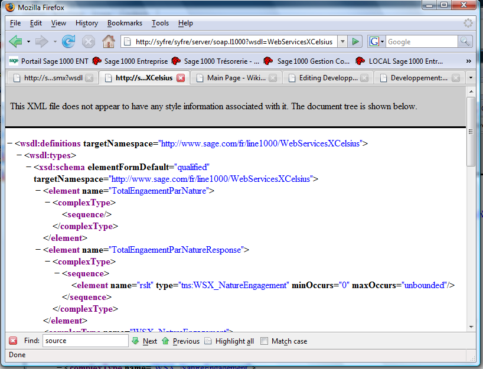

Un Web Service pour XCelsius
Sommaire |
XCelsius
XCelsius est un logiciel de la suite Business Object permettant de construire des tableaux de bords graphiques et interactifs, XCelsius supporte différent type de connecteur de données dont un connecteur Service Web qui permet d'appeler des Web Services.
Dans cet exemple nous allons implémenter un service ligne 1000 fournissant le total des engagement par nature pour un tableau de bord XCelsius.
Les différentes étapes
Le développement du service :
- Ajout d'un paquet de service
- Ajout d'une classe résultat
- Ajout d'une classe support de service
- Ajout d'une opération de service
L'utilisation du service dans XCelsius :
- Créer un nouveau document XCelsius
- Définir la structures des données échangées
- Ajouter une source de données Web Service
- Mapper la source de données sur la structure des données
- Ajouter un diagramme par secteur
- Tester
Développement du service
Nous créons un paquet de type service locaux pour héberger le service :
nous ajoutons ensuite une classe non persistente qui contiendra les valeurs retournées à XCelsius :
Cette classe contient deux attributs :
- Le code de la nature
- La valeur engagée sur cette nature
Nous ajoutons ensuite une classe support pour le service, le rôle de cette classe est de supporter les opérations du service, elle ne contient donc aucun attribut :
puis l'opération du service :
Cette opération ne prend pas de paramètre en entrée et retourne une liste de nature d'engagement, la liste des nature engagement est retourné par un paramètre out de type WSX_NatureEngagementList :
nous modifions ensuite le code code l'opération pour obtenir cette liste :
var vCursor:TDetailEngagementCursor; inst:WSX_NatureEngagement; begin vCursor := TDetailEngagement.CreateCursor; vCursor.Descendants := True; vCursor.AgregateCount := 1; vCursor.Agregates[1] := 'montantValorisation'; vCursor.GroupBycount := 1; vCursor.GroupBys[1] := 'NatureBudgetaire.code'; vCursor.Open; while not vCursor.Eoi do begin inst := WSX_NatureEngagement.Create; inst.Code := vCursor.Fields[0]; inst.Montant := vCursor.Fields[1]; rslt.AddRef(inst); vCursor.Next; end; end;
notez qu'il n'est pas nécessaire d'instancier la liste reçue en paramètre.
Après avoir relancer le Service ligne 1000 nous pouvons vérifier que notre Web Service est bien disponible en interrogeant son wsdl :

Utilisation dans XCelsius
Démarrons XCelsius :

Nous définissons d'abord une structure de données dans la feuille Excel pour recevoir nos données :
Les valeurs saisies servent uniquement à matérialiser les données lors du développement, elles seront remplacées lors de l'exécution par les valeurs retournées par le Web service.
puis nous ajoutons une connexion Web Services :
après importation du wsdl la connexion présente les différentes opérations disponibles sur le service, après avoir sélectionnée notre opération nous établissons ensuite la relation entre ses paramètres et les cellules du tableau Excel :
nous ajoutons ensuite un composant diagramme et nous relions ce composant aux cellules du tableau, le code de l'engagement sera une étiquette, la valeur engagée sera une donnée du diagramme :
Exécutons :
Et voila !
{{Footer|Web Services (ws)
| Whos here now: Members 0 Guests 1 Bots & Crawlers 0 |